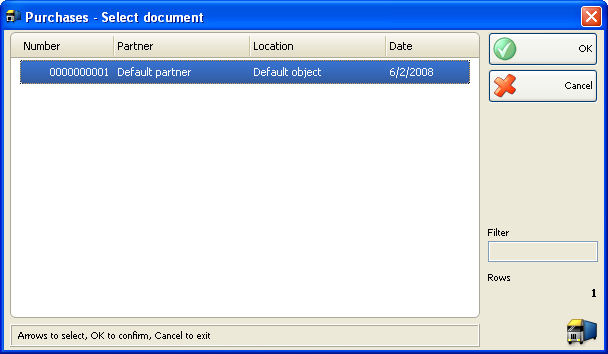
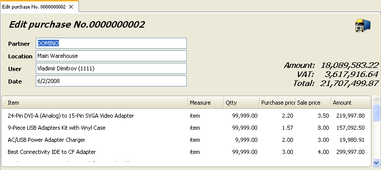

Editare si retiparire achizitii
In fereastra Achizitii � selectare document (shortcut taste Ctrl+F3) se poate selecta documentul pentru editare sau retiparire dupa care click pe butonul OK pentru confirmare.

Folositi fereastra Editare achizitie pentru a edita sau sterge o achizitie existenta.

Campul Partner va permite editarea unui nume client / companie, care livreaza produsul. Puteti vizualiza lista furnizorilor apasand tasta F4.
Campul Localizare va permite editarea unui nume localizarii, de unde a fost ridicat produsul. Puteti vizualiza lista localizarii apasand tasta F4.
Campul Utilizator va permite editarea unui nume utilizator, a celui care a efectuat achizitia. Puteti vizualiza lista localizarii apasand tasta F4.
Campul Articol va permite editaera unei denumiri pentru un articol anume. Puteti vizualiza lista localizarii apasand tasta F4. Pentru a adauga un articol nou. Inserati o linie noua apasand tasta ENTER.
Se poate introduce o noua valoare in campul Cant. Daca doriti sa modificati cantitatea curenta.
Pentru stergerea unei inregistrari anume, modificati cantitatea in �zero�. Pentru a sterge documentul, setati toate cantitatile la �zero�.
Dublu-click pe data va permite modificarea datei. In fereastra Calendar selectati data (prin dublu click pe data dorita sau prin apasarea butonului OK). Dup ace inchideti fereastra Calendar, noua data va aparea in fereastra Editare achizitie.
Apasati tasta F9 pentru salvare document.
Puteti folosi fereastra Achizitii � selectare document pentru retiparirea o achizitie deja existenta.
Dup ace ati selectat un document pentru retiparire, trebuie sa confirmati alegerea. In acest moment puteti efectua o pre-vizualizare sau tiparire directa a documentului, depinzand de print settings pe care o foloisiti pentru tiparire documente.

�2006-2012 Microinvest, All rights reserved